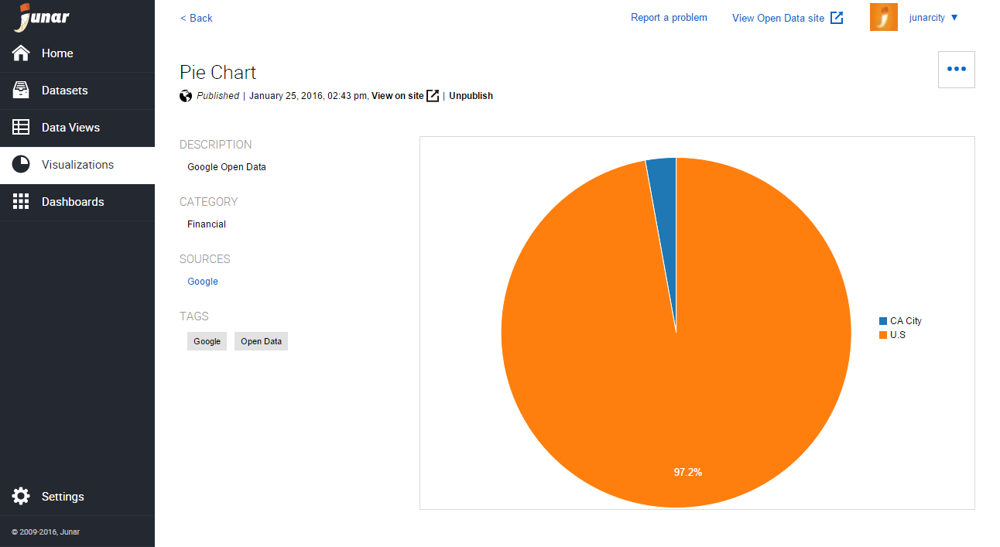

1. Intro¶
This document describes the supporting functions of the Junar Open Data Platform. These functions are categorized under the following topics:
- Datasets - creating, updating, deleting, and publishing
- Data Views - creating, updating, deleting, and publishing
- Visualizations - creating, updating, deleting, and publishing
- Dashboards - creating, updating, deleting, and publishing
- Accessing the Platform and User Roles
- Platform - sections, getting started, and general configuration
1.1 What is a Dataset?¶
A “dataset” is a resource that can be obtained from a document hosted on your computer, a web service, or the Internet.
The platform currently supports the following file types: DOC, DOCX, DOCM, DOTX, DOTM, XLS, XLSX, XLSM, XLTX, XLTM, XLSB, XLAM, XLL, ODT, ODS, CSV, TXT, PDF, HTML, HTM, XML, KML, KMZ, TSV, GIF, GZ, JPEG, JPG, PNG, TAB, TAR, ZIP, and SOAP or REST web services.
1.2 What is a Data View?¶
A “data view” is a resource created from a dataset. Data views can contain a combination of rows and columns, or even entire tables. They are updated every time changes are made to the source dataset..
Data views work independently from datasets, so they can be invoked via the API, downloaded in various formats, used to generate visualizations, embedded in other sites, shared across different social networks, etc.
1.3 What is a Visualization?¶
A “visualization” is a graphical representation of a data selection chosen by the user from a data view. Visualizations can be shared individually and/or added to a dashboard. The platform supports the following types of visualizations: tables, charts, and maps.
1.4 What is a Dashboard?¶
A “dashboard” is a collection of data views and visualizations that can be brought together and published to an Open Data microsite. Dashboards can also be shared directly through social networks and used via an API.

Dashboards are used to group datasets, data views, and visualizations under a specific topic chosen by the user. They may include as many resources as the user would like to share.